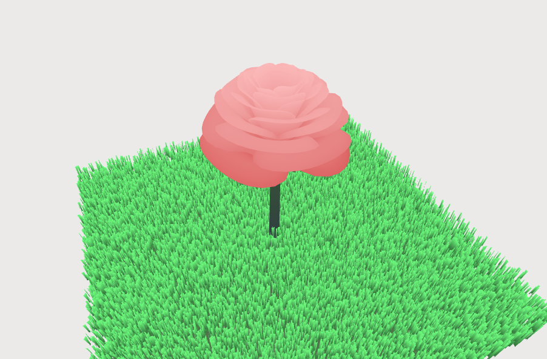

Overview
This was developed as a weekly project for CS372: Computer Graphics at Calvin University. The 3D demo was developed using THREE.js, a popular 3D library for the web.

This was developed as a weekly project for CS372: Computer Graphics at Calvin University. The 3D demo was developed using THREE.js, a popular 3D library for the web.